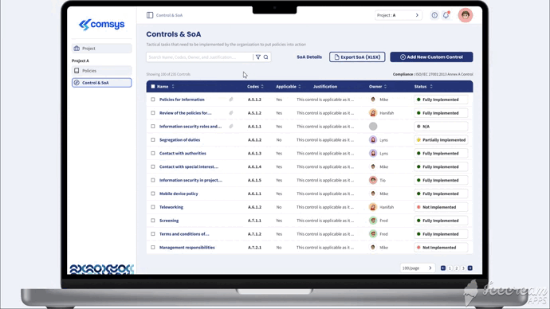
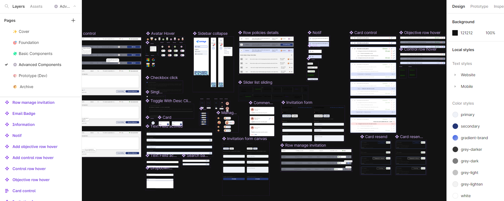
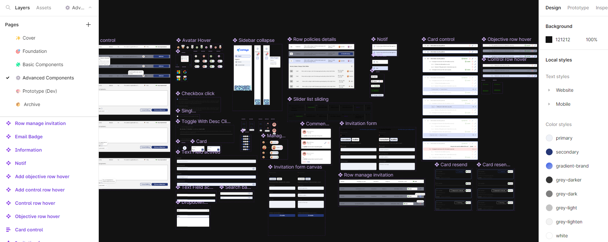
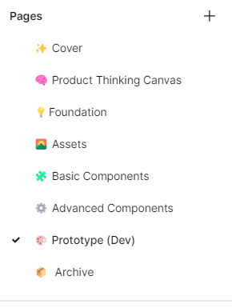
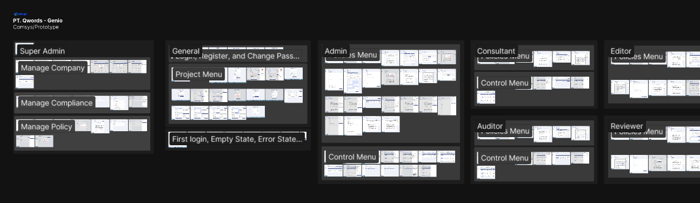
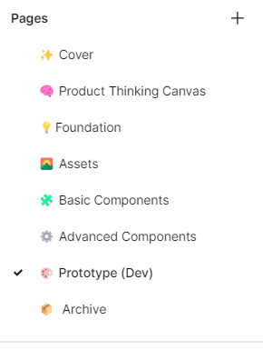
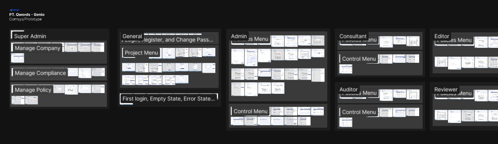

🧩 Problem.
Companies often find it difficult to meet ISO 27001 audit requirements because the documents required are too many
and difficult to manage. In addition, different users such as consultants, auditors and reviewer companies also require
different access rights to documents related to audits.
 💼 My Role In the Project, Who Else in the project and My responsibility.
💼 My Role In the Project, Who Else in the project and My responsibility.
My role in this project is as a UI/UX Designer. I work intently with the developer team, developer manager, and
project owner. My responsibilities cover the entire design process, from research to testing.
🎯 Goals.
• Create document, workflow, and report management applications like competitors (tugboatlogic)
• Meets software requirements that comply with ISO 27001/27002.
• Create applications with good performance and stability.
• Create applications with better security than competitors.
• Make UX simpler and easier than competitors
 🔍 Research Method :
🔍 Research Method :
-
Conduct surveys and interviews with companies that have conducted ISO 27001 audits to understand their problems and
needs regarding document management for audits.
-
Analyze the features of competitors such as Tugboat Logic and XYZ System to gain insight into how they handle document
management for ISO 27001 audits.
-
Conduct brainstorming and workshops with the UX team to develop solutions that meet user needs and address identified
issues.
 👥 Persona.
• Hanifah, Super admin
👥 Persona.
• Hanifah, Super admin
Goals :
- Ensure that user permissions are set correctly.
- Monitor system usage and ensure data security.
Need :
- Ability to easily manage tasks and access rights of other users.
- Ability to easily monitor system usage and review user activity.
- Ability to provide recommendations related to data security issues.
• Fred, Admin company
Goals :
- Manage ISO 27001 related documents easily and efficiently.
- Ensuring that the documents required for the audit are available and properly managed.
Need :
- Ability to easily upload, edit and delete documents.
- Ability to search documents quickly and easily.
- Ability to easily monitor and review different document versions.
 📌 Solution points.
📌 Solution points.
- Document Management Platform
- Documents Search, Filter, Tracking, and Comment
- Projects Management
- Manage Collabolator (User role)
- Simple and Minimalism design
- Provide shortcut and bulk action
 🎨 Design.
🎨 Design.
- Clean User Interface Design and Easy to Use
- Design with a Focus on Ease of Access
- Design With a Focus on User Access Rights
- Design with a Focus on Usability Heuristics

📐 Testing.
-
Functionality testing. Ensuring all features and functionality of the document management platform work properly and
as expected. Menguji keseluruhan sistem dari berbagai perangkat dan browser untuk memastikan platform manajemen
dokumen dapat diakses dan digunakan dengan baik.
-
Usability testing. Testing user interaction with document management platforms, focusing on collaboration features and
setting user permissions. Ensure users can easily interact with the document management platform, and no misuse
occurs.

 Fulltime
Fulltime Des 2022 - Now
Des 2022 - Now
 Play Prototype
Play Prototype


 

 


